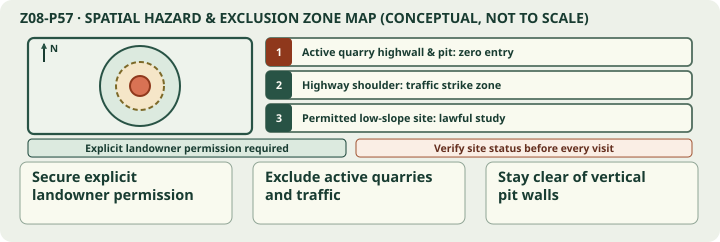

Z08-P57 · Rocks, minerals and materials · New manuscript
Private Land Permission, Gravel Pits and Quarry Hazards
Manage lawful rock-collecting permission and lethal mechanical/collapse hazards around gravel pits, roadcuts, and private property.
When it applies · Lawful non-park rockhounding in public gravel areas or permission-granted private land.
Equipment · Written landowner permission, high-visibility vest near lawful roadsides, hard hat/eye protection where authorized.

Actions
- Obtain explicit prior permission from private landowners before entering fields, creek beds, or gravel pits, and honor all access conditions.[R11]
- Never enter active or abandoned commercial quarries, mine pits, or steep highway roadcuts where blasting, heavy haul traffic, flooded drop-offs, and rockfall kill trespassers.[R11, R16]
- Keep clear of high-speed highway shoulders when inspecting roadcut geology; park only in lawful pullouts completely off the traveled lane.[R11]
Failure recognition · Trespassing into active gravel pits or stopping on narrow highway shoulders exposes rockhounds to wall slumps, machinery blind spots, and traffic strikes.[R11, R16]
Verify · Written or verified landowner permission, safe parking, and exclusion of active pits and vertical walls are confirmed.[R11]
Stop or change course · Stop and leave immediately if no-trespassing signs, active machinery, vertical overhangs, or unsafe traffic shoulders are present.[R11, R16]
Evidence and editorial notes
- R11 · Minnesota DNR · Lake Superior Agate and Public-Land Rock Collecting Guidelines (Current web edition)
- Section: Lawful public-land gravel-pit and road-cut rock collecting limits · Conditions: Unrestricted public gravel areas and authorized private land
Support: Where lawful, rock hounding requires landowner permission on private land and compliance with local safety and collecting limits.
Limitations: Private property, active quarries, road right-of-way hazards, and tribal lands carry separate prohibitions and trespass penalties. · Conflicting evidence: None noted.
Editorial note: Clarifies lawful vs prohibited rock collection. · Specialist reviewer: Public-lands and legal reviewer
Primary source · checked 2026-11-25 - R16 · Minnesota DNR · Rocks and Minerals of Minnesota Educational Guide (Current web edition)
- Section: Sedimentary limestone, sandstone, and shale permeability · Conditions: Southeastern Minnesota karst, bluff, and river-valley sedimentary strata
Support: Sandstone, limestone, and shale differ sharply in cementation, porosity, and fissility, governing weathering and cliff instability.
Limitations: Karst bluffs and fractured shales shed rockfall unpredictably; visual inspection cannot certify slope or load stability. · Conflicting evidence: None noted.
Editorial note: Covers Upper Midwest sedimentary rock hazards. · Specialist reviewer: Engineering geologist
Primary source · checked 2026-11-25
Source lineage · New manuscript (Z08 P16 collection safety) · Classification · New manuscript.